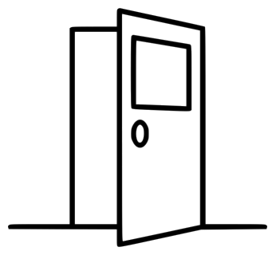

Nearbii is a virtual proximity-based meeting software. Do you ever feel like normal online meeting software doesn’t provide users with enough ways to interact? Do you ever feel isolated from other meeting participants? Well, Nearbii aims to solve both of those problems with its proximity feature. When you join a Nearbii call, you are able to move around a virtual room with your arrow keys. When you approach others in the meeting, you are able to see them and talk with them. As soon as you move away, however, you lose contact. This gives participants new ways to interact and aims to make the meeting feel as if it were real life. The host still has the option to temporarily override the proximity feature if they choose to do so, allowing them to communicate important information to participants if necessary.
Rooms are setup by the host and provide the layout of the meeting space. They give structure to the meeting environment and give participants places to meet. They can be given labels by the host to help participants navigate the meeting environment. Participants can also choose to assign minigames to certain rooms if desired. The meeting can consist of 1 or more rooms, depending on your plan.
Like other online meeting applications, Nearbii allows participants to share their screens with others. Participants can share their screen with people nearby, and the host has the ability to share their screen with all participants if they so desire.
Nearbii has a hierarchy system for its participants, giving some users special privileges. For example, the host can design the meeting environment and override the proximity feature when necessary. The host can also give special privileges to certain participants in the meeting if needed.
When Nearbii is used for parties and social events, participants can choose to play minigames with others who are nearby. These games can be any kind of multiplayer game ranging from card games to simple video games. These games include:
Note: The first 3 minigames are available for the free plan, the first 6 are for the premium plan and all of them are for the premium+ plan
Nearbii users have the option to customize their appearance with avatars. They can buy avatars as ad-ons and use them in a Nearbii call. Some examples of avatars are show here.
© 2020 Virco Corp